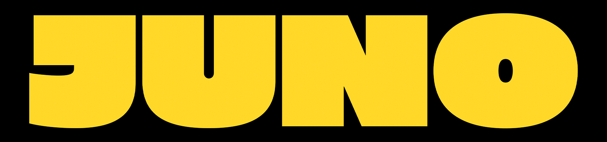

Winter Concept
Placeholder for a larger alpine music experience.

TicketsEvents
A structured event page layout for upcoming nights, past moments, seasonal concepts and private experiences. All entries below are sample concepts.
Upcoming Events
Demo concepts only. Real dates, lineups and ticketing can be added later.
Past Events
Prepared space for future photo galleries, aftermovies and selected moments.
Festivals
Large-format concepts can be presented here with visual direction, mood and practical details.
Placeholder for a larger alpine music experience.
Space for focused indoor nightlife concepts.
Layout for seasonal sound and atmosphere ideas.
Private Events
Private-event content, enquiry routes and production notes can be added here later.